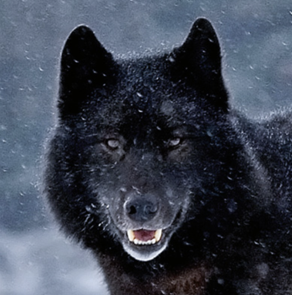
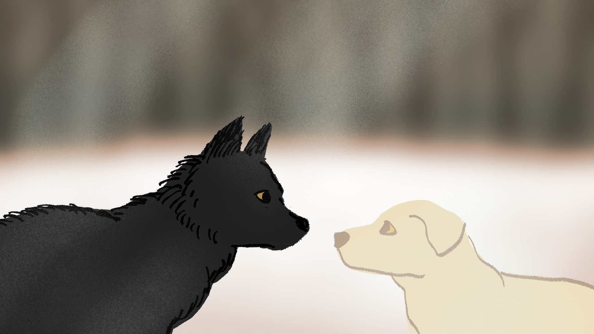
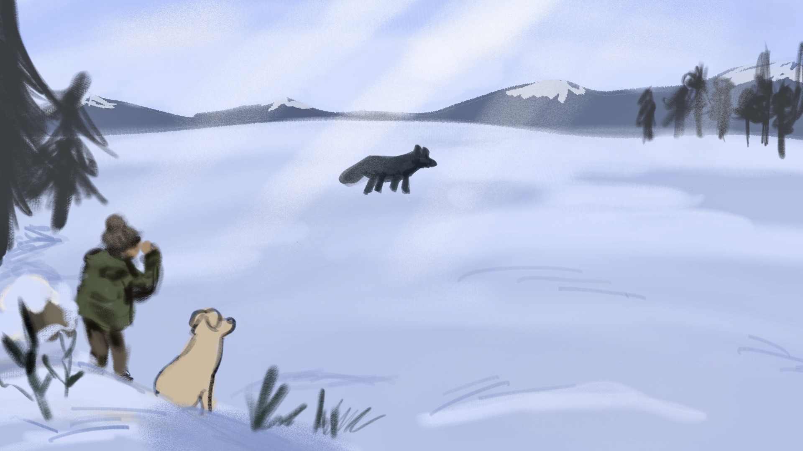
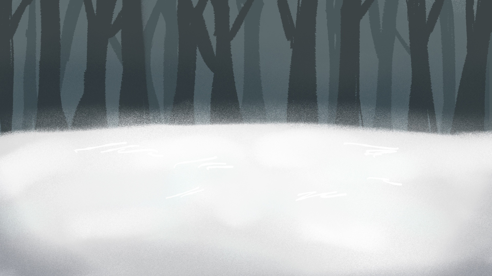
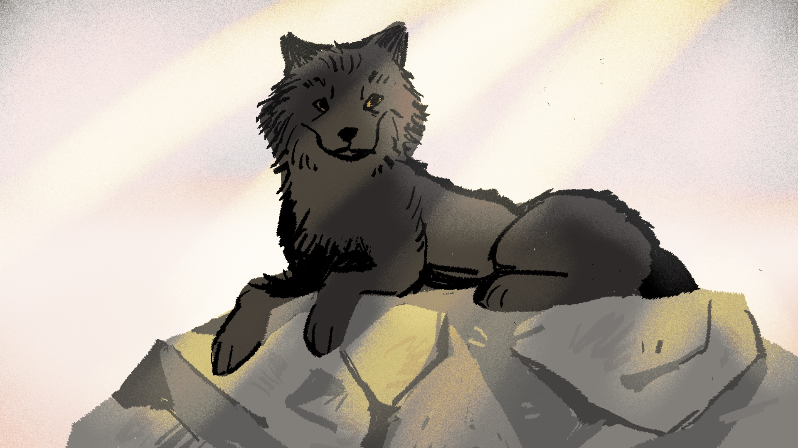

September 2009 · Juneau, Alaska
Missing: Romeo

Wild black wolf last seen near Mendenhall Lake.
Illustrated notice based on published reporting.




01 / Mendenhall Lake, Alaska · 2003
Wolf tracks near a house led out onto Mendenhall Lake.
In 2003, Nick Jans was living near Mendenhall Lake, outside Juneau, Alaska. Near his door, he noticed a set of wolf tracks leading out toward the lake.
At the end of the trail stood a lone black wolf.
02 / Mendenhall Lake, Alaska
The black wolf kept coming back. Soon, Nick and Sherrie Jans began to see who he was waiting for.
Nick Jans recalls seeing the wolf near his home on many mornings. Sometimes the tracks led right up to the door. The wolf had taken an interest in Dakotah, the family’s yellow Labrador.
Sherrie was protective of Dakotah. One morning, she saw the wolf curled up in the yard, waiting for Dakotah to come out. Sherrie called him the Romeo wolf, and the name stuck.
03 / Mendenhall Lake, Alaska
As word spread, people came to Mendenhall Lake hoping to catch a glimpse of Romeo.
Romeo became a familiar sight around the lake, but every encounter happened on his terms. Nick Jans recalled one afternoon when he lay down on the ice with his dog Gus. Romeo rested nearby, close enough to share the quiet and far enough to leave whenever he wanted.
Other residents knew Romeo by sound. At night, his howls carried across the lake and could sometimes be heard from the West Glacier Trail.
04 / Mendenhall Lake, Alaska
In September 2009, Romeo disappeared.
After six years of encounters near the lake, Romeo stopped appearing. Harry Robinson helped investigate, and wildlife authorities eventually found that two poachers had killed him.
05 / Mendenhall Lake, Alaska
Romeo never returned to the lake, but Juneau kept his story.
Nick Jans helped bring Romeo’s story back to Mendenhall Lake. In 2017, an exhibit opened at the Mendenhall Glacier Visitor Center, where visitors could hear Romeo’s recorded howls and see a bronze cast of his paw print.
The tracks that first led Jans out to the ice were long gone. A single paw print now helps people remember the wolf who left them.